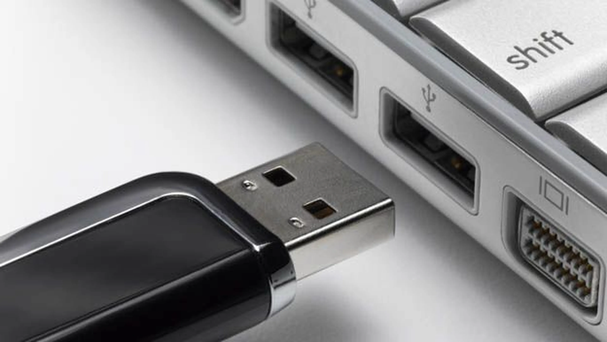

Un dispositivo USB, también conocido como dispositivo flash o dispositivo de memoria, es un dispositivo pequeño y portátil que se conecta al puerto USB de su computadora. Los dispositivos USB se utilizan comúnmente para almacenamiento, respaldo de datos y transferencia de archivos entre dispositivos.
